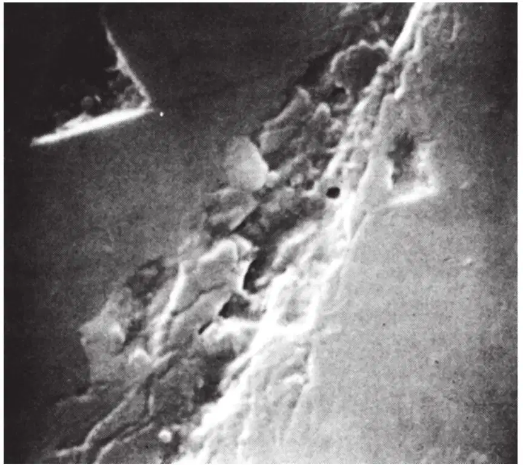
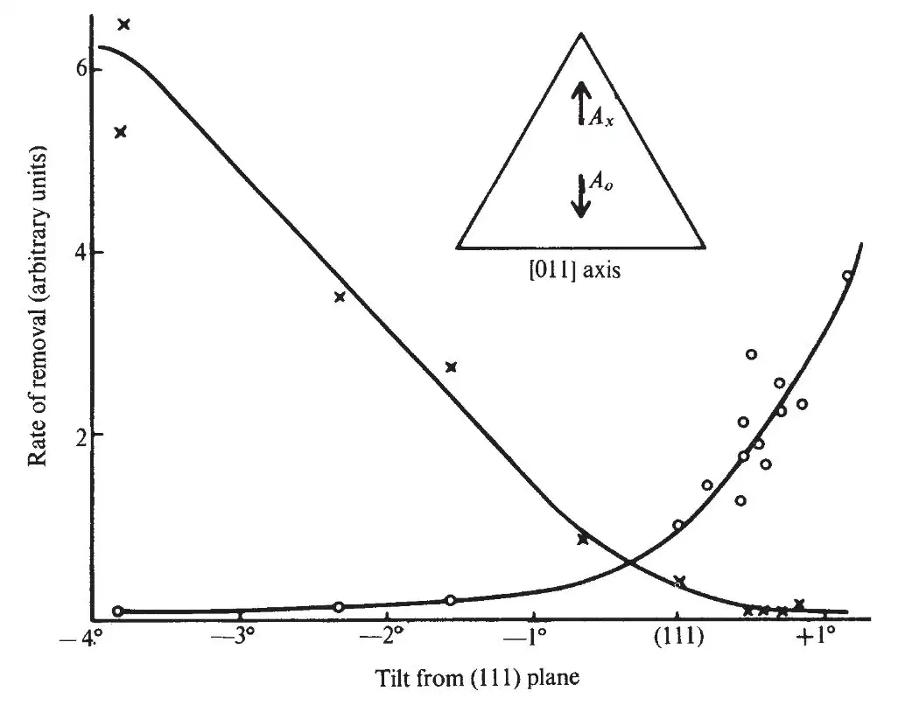
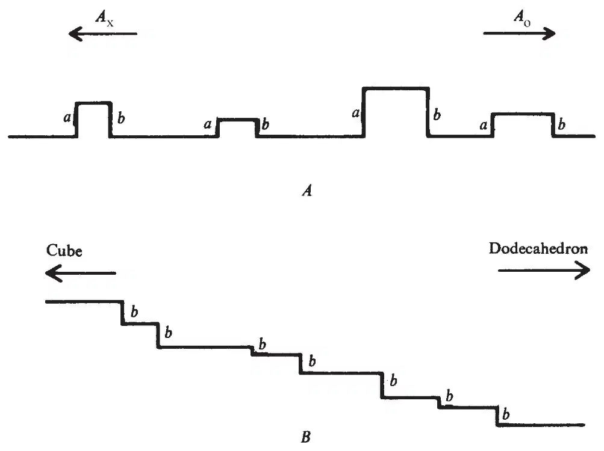
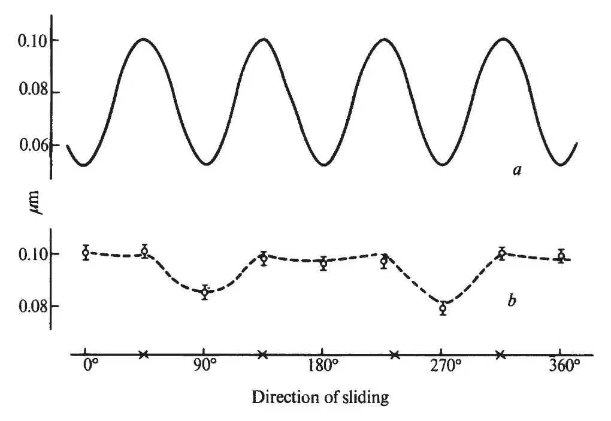
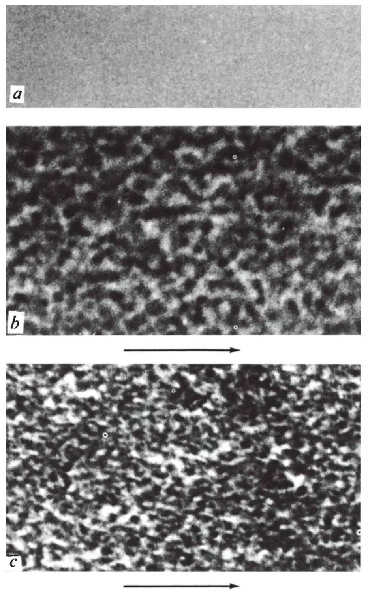

中文
中文J. Wilks
Editor’s Note
The interest of this contribution from John Wilks at Oxford is not so much in the specific findings—that polished diamond is microscopically rough—but in the way it touches on several themes in materials science that have become increasingly relevant in recent decades: the microscopic mechanisms of lubrication and friction, the microtopography of surfaces, and the quest for superhard materials. Wilks highlights the fact that polishing a solid surface is usually different to abrading it, involving local melting because of intense frictional heating. But as only diamond powder itself can polish diamond, abrasion must here be the mechanism: the powder chips the surface and leaves it rough in a way that depends on the orientation of the crystal planes. 中文
Polished diamond surfaces have unusual properties because polishing of the brittle material generally proceeds by mechanical chipping. 中文
DIAMONDS are shaped and polished to produce gem stones by methods which have remained essentially unchanged for several hundred years. Yet it is only recently that the physical basis of these operations has been studied, and their unusual features fully appreciated. This article outlines the principal features of the polishing process and describes some recent experiments which illustrate the very characteristic nature both of the process itself and the polished surfaces produced. We shall show that these perhaps unique properties result from the very hard and brittle nature of the diamond. 中文
The usual method of polishing a diamond is to hold it either against the face of a rotating cast-iron wheel (or scaife) charged with a suspension of fine diamond powder in a light oil, or against the face of a wheel in which diamond powder is bonded into a metal matrix. One of the most striking features of this method is that if a cube face is prepared on the diamond, it turns out that the rate of removal of material during polishing with a bonded wheel in a direction parallel to a cube axis is about 100 times greater than if the same face is polished in a direction at 45° to a cube axis. Similar effects are observed on other faces, and even greater differences are evident when polishing on a cast-iron scaife, as the more resistant directions of the diamond tend to knock the powder out of the scaife. 中文
In preparing a gem stone from a rough diamond it is necessary to remove a certain amount of material to position the facets before polishing them. Another unusual feature is that this removal of material is effected in almost the same way as polishing, except that larger sized diamond powder is used to remove material quickly. For most materials, polishing and the removal of material by abrasion are quite different processes. Removal of material is generally achieved by the use of an abrasive powder in what is essentially a cutting process; the powder is harder than the specimen, and it either gouges out material, or sets up stresses which lead to cracking after it has moved on. By contrast, polishing is generally a smearing process, brought about by rubbing with a second material to produce high temperatures in the small regions of true contact between the asperities on the two surfaces; the high temperatures result in local melting of the asperities, which are then smoothed out. It follows that to polish a specimen, we must use polishing material with a higher melting point, so that on rubbing, the specimen melts and flows first. For further details of the general features of abrasion and polishing, see for example, Bowden and Tabor1 and Cottrell2. 中文
In view of all this, one would expect to encounter difficulties both in removing material from diamonds and in polishing them. As far as the removal of material is concerned, there is no harder substance than diamond which can be used to produce abrasive cutting. In rubbing operations, the high thermal conductivity of diamond will tend to reduce the temperature of the hot spots at the areas of local contact, whereas high temperatures are required to effect even the conversion of diamond to graphite. Thus, conditions seem unfavorable for both abrasion and polishing, but in fact the traditional methods used by the diamond industry abrade and polish diamond quite successfully. The rate of abrasion is relatively low, but a high polish can readily be obtained, and a diamond surface may be worked to the standard of a good optical flat3. 中文
The first scientific experiments on the polishing process were made more than 50 years ago by Tolkowsky4, who proposed that both abrasion and polishing proceed by mechanical chipping on a microscopic scale. This chipping will be controlled by the lie of the cleavage planes relative to the direction of abrasion, and will therefore occur more readily in some directions than others, thus giving rise to very considerable differences in rates of abrasion. To indicate the geometrical arrangement of the cleavage planes, Tolkowsky made use of a model of diamond built up from small identical octahedral and tetrahedral shaped blocks, and thus explained the variations of the hardness on both the cube and the dodecahedron planes4,5. 中文
Tolkowsky was principally interested in practical applications and his conclusions about how to polish and abrade diamonds soon found their way into the diamond trade, as did his other research on the best way to lay out the facets of a diamond so as to produce the well known brilliant cut. On the other hand, his account of the underlying mechanism was not widely published, and attracted little attention. His treatment was criticized on the grounds that diamond is certainly not built up of equally sized elementary blocks as in his model, but the essential function of the model is to indicate the positions of the cleavage planes—and this it does correctly. It now turns out, as the result of various experiments on diamond over the past 15 years, together with increasing knowledge of the nature of brittle materials, that Tolkowsky’s views are essentially correct. 中文
One of the crucial features of the above experiment observed but not stressed by Tolkowsky4, is that the rate of removal of material is proportional to the total number of revolutions of the polishing scaife but does not depend on its speed. This result, confirmed by Wilks and Wilks5,6, shows that thermally activated processes play no significant part in the removal of material. The rubbing together of two materials produces heating at the areas of true local contact, and this excess temperature increases rapidly with the speed of rubbing1. The fact that the abrasion per revolution does not increase with rising speed of rubbing clearly demonstrates that local hot spots play no significant part in the wear process. In particular, it rules out the possibility that the diamond is worn away by either burning or conversion to graphite, as suggested by Seal7. On the other hand, one would expect the same amount of material to be removed by each revolution of the wheel if the abrasion proceeds by a mechanical chipping or cleavage process. 中文
The conditions necessary for materials to fail by chipping or brittle fracture have been discussed by several authors, for example Kelly8. Kelly, Tyson and Cottrell9 have considered whether an ideal crystal free of imperfections will fail plastically by shear or by brittle fracture under tension. They show that for face centred metals such as copper, gold and silver, the stress required to produce fracture is about 30 times greater than that to produce shear, and that failure always occurs by plastic deformation rather than cleavage. On the other hand, the calculations show that, of the substances considered, sodium chloride and diamond are most likely to fail by brittle fracture. The critical stresses for shear and cleavage in sodium chloride and diamond are approximately equal, but the calculations are not sufficiently refined to indicate which process is preferred. These calculations are, however, for ideal crystals and the essential question for real materials is whether the presence and motion of dislocations will permit plastic flow before fracture. 中文
Dislocations in diamond have been observed by Evans10 who prepared specimens of diamond by etching, and viewed the dislocations directly in the transmission electron microscope. They are also clearly delineated by the X-ray topograph techniques of Frank and Lang11. Calculations mentioned by Evans12 suggest that the movement of the dislocations will be inhibited by the necessity of breaking carbon-carbon bonds. Their motion has been studied experimentally by Evans and Wild12,13 who took specimens of diamond in the form of thin slabs, loaded them in the middle, and observed whether they failed by fracture or plastic deformation. They found that at low temperatures the beam always failed by fracture, but that an increasing amount of plastic flow was observed as the temperature exceeded 1,500 ℃. Hence dislocations in diamond may be quite mobile, but at room temperature are held back by obstacles which can only be overcome by considerable thermal activation. As the rates of abrasion and polish in the experiments referred to above were independent of the temperature of local hot spots, one concludes that the abrasion was not accompanied by any thermally activated motion of dislocations. 中文
It is sometimes suggested that plastic flow in diamond may be produced by conditions of intense local pressure. The effect of pressure on brittle materials is sometimes surprising, for example it is possible to compress a slab of brittle material, such as rock salt, to half its initial thickness without producing cracking14, and Howes and Tolansky15 have argued that the ring cracks produced by indenting diamond with steel spheres show evidence of plastic flow. Later studies by Lawn and Komatsu16 of the region round such a crack, using X-ray topography, show no sign of plastic deformation, and Frank and Lawn17 have since shown that the cracks may be described in terms of fracture processes. 中文
We conclude that the mechanism of abrasion is one of mechanical chipping. This conclusion is supported by a study of the area around an abrasion mark, by Frank, Lawn, Lang and Wilks18 using X-ray topography, which shows that the state of strain in the surface is consistent with stresses set up by fracture processes and not by plastic flow. We believe that there is no convincing evidence for the motion of dislocations in any of the relevant abrasion and polishing experiments, although claims to have observed plastic flow in diamond at room temperature have been made by Brookes19 and by Gane and Cox20. Brooks indented a diamond surface with a Knoop indenter made of diamond and claimed that the form of the indentation indicated that plastic flow had occurred. A careful study of Brookes’s indentations, however, show clear indications of brittle fracture (Fig. 1), which appear to have been obscured in the earlier micrographs. The observations of Gane and Cox were based on the study of thin diamond wedges pressed against each other, but their evidence is at best inconclusive. Even under these rather specialized conditions, there is no clear evidence that plastic flow and motion of dislocations took place. 中文

Fig. 1. Scanning electron microscope micrograph of a diamond surface indented with a Knoop indenter (×8,400). 中文
We shall now describe three sets of experiments which confirm the fracture process and illustrates the unusual properties of polished diamond surfaces. In the first set a simple micro-abrasion tester21 was used to study the variation of the rate of removal of material—in short the hardness of the diamond—with the orientation of the surface and the direction of polish. The hardness is often extremely sensitive to any change in the orientation of the facet being abraded. For example, Fig. 2 shows the relative rates of removal of material on surfaces obtained by tilting an octahedron plane about the (011) axis indicated in the sketch plan. The crosses show the rate of removal of material for abrasion in the direction Ax, and the circles the rate in the direction Ao. We see that on a true octahedron plane the rate of removal in the direction Ao is more than twice that in the direction Ax, but that a tilt of only about 1° is sufficient to reverse the relativehardness. 中文

Fig. 2. The relative rates of removal of material by grinding on surfaces near to an octahedron plane. The symbols ○ and × correspond to the directions shown in the inset. 中文
These orientation effects are not explained by Tolkowsky’s treatment, which also has difficulty in discussing the octahedron face. The variation in rates of abrasion on cube and dodecahedron faces is explained by the lie of the cleavage planes which results in the production of a different structure by abrasion in different directions. As the cleavage planes run parallel to an octahedron face, the treatment seems to predict a uniform surface with no easy and hard directions of abrasion, in contrast with the measurements. To explain this point, we must consider the behavior of tilted octahedron facets. 中文
A diamond surface which has been polished by a process of mechanical chipping will not be atomatically flat but must consist of hills and valleys bounded by an irregular arrangement of cleavage planes as shown very schematically in Fig. 3A. It follows that abrasion proceeds by the removal of material from the tops or sides of the microhills. If Fig. 3A represents a section through an octahedron face, parallel to the directions Ax and Ao, the lie of the cleavage planes is such that the most likely sites for the removal of material are the edges a and b (ref. 5). It also follows that the easiest direction of abrasion is Ao, and that most of the material is then removed from the edges b. If, on the other hand, a face is prepared inclined to the octahedron face by a small angle, the lie of the cleavage planes remains the same, so the structure of the microhills is as shown schematically in Fig. 3B. Topographically, the abrading wheel must be presented with an increased number of b type edges, and the hardness correspondingly reduced. Similarly a tilt in the opposite direction increases the hardness. 中文

Fig. 3. Schematic diagrams of polished diamond surfaces (see text). 中文
One also expects that the change in hardness with tilt may be very rapid. If the linear dimensions of the microhills are all of the same order of magnitude h, the average distance between hills in contact with the abrading wheel will be much larger because the areas of real contact are less than the nominal areas by factors of order 104. Thus the distance between the hills may be of the order of 100h, so that a tilt of 1° would be sufficient to change the topography of Fig. 3A to that of Fig. 3B, and thus approximately double the number of sites of easy abrasion. Similar arguments may be applied to account for the hardness of both true and tilted cube and dodecahedron faces. All the predictions that can be made from the model are in accord with experiment5. 中文
We have also made studies of the jagged nature of polished diamond surfaces, implied by our abrasion experiments, by observing the friction of diamond sliding on diamond in air. Some time ago Seal7 showed that the friction of a polished cube surface varies with the azimuthal angle of sliding, with a four-fold symmetry. This result is at first surprising, as Bowden and Hanwell22 have shown that diamond surfaces in air are covered by a strongly adsorbed film which reduces the friction by an order of magnitude below its value for clean surfaces in high vacuum. Thus even though the diamond surface is covered by a tenacious film of adsorbed gases, the symmetry of the diamond is projected through the film. 中文
The friction between diamonds in air was first measured by Bowden and Young23, and Bowden and Tabor24 later pointed out that their results showed an approximate relation between the friction μ and the load W of the form μ ∝ W –1/3. They then suggested that this relation arose because of adhesion processes between the actual areas of true contact, and that this adhesion was responsible for the friction. Recent measurements by Casey and Wilks25 show, however, that the friction is independent of the load over a wide range of loads, including the range of the earlier experiments. It therefore seems that the mechanism responsible for friction is not one of adhesion, a result which is confirmed by the fact that the friction remains unchanged when the diamond surface is lubricated with light oil. 中文
The observed behavior of the friction is readily explained by a roughness (or ratchet) type mechanism associated with the jagged nature of a polished diamond surface. That is, the friction force arises from the work required to move the two diamond surfaces against the normal load as they are forced apart when asperities ride over each other. Some of this work will degenerate into heat when the jagged and irregular surfaces come together again, because the return motion will tend to be abrupt and irreversible. The work of separation is proportional to the load, so this type of mechanism leads to a value of the friction which is independent of the load. We believe that this mechanism accounts quite generally for the friction of diamond on diamond in air as discussed in more detail by Casey and Wilks25. The adsorbed film acts as a lubricant, which reduces adhesion and the high friction observed in a vacuum, but does not obscure the structure of the surface. 中文
Fig. 4a shows the results of recent measurements on the friction of a diamond sliding over a polished cube surface which are similar to those of Seal7. The diamond surface had been polished in the usual way and was therefore covered by an array of fine polishing lines or grooves running parallel to a cube axis. Nevertheless, the friction shows a full four-fold symmetry, having the same value in directions parallel and perpendicular to the grooves. We then repolished a surface by abrasion in a hard direction at 45° to a cube axis, until the original polishing lines were replaced by a new set at 45° to the original direction. The friction on this new surface is shown in curve b; the friction has quite different values and exhibits only a two-fold symmetry, the lowest values being for directions parallel to the direction of polish. 中文

Fig. 4. The friction of a diamond sliding over a polished cube surface as a function of azimuthal angle. a, After polishing in the normal soft direction; b, after polishing in a hard direction.
The symbols × indicate the positions of the cube axes. 中文
These results confirm that the topography of a polished surface is determined by mechanical chipping. Just as abrasion proceeds at different rates in different directions, because of the orientation of the cleavage planes, so surfaces prepared by polishing in different directions will have different structures. As discussed by Tolkowsky, a surface polished in the usual direction parallel to a cube axis will present a jagged surface with a four-fold symmetry. If, however, the diamond is polished in one of the hard directions, the surface structure will tend to take the form of grooving parallel to the direction of polish, with the two-fold symmetry shown in the friction measurements. We are at present extending our studies to observe the wear effects associated with repeated passes of the stylus over the same area of surface. 中文
The third set of experiments are concerned with observing the surface structure of polished diamonds by using high resolution electron microscopy and carbon replica techniques. The structure turns out to be irregular and on a very small scale; therefore, particular care must be taken to ensure that the micrograph is in focus and free of astigmatism. Fig. 5 shows micrographs prepared under carefully controlled and similar conditions, except that the replica of Fig. 5a was taken from a freshly cleaved surface of mica, and those of Fig. 5b and c from polished surfaces of diamond. The greater contrast in the diamond micrographs indicates that the surface is much rougher than the mica and that the scale of the irregularities is of the order of 50 Å. 中文
The micrographs in Fig. 5b and c were prepared from the same stone, using the same technique, but Fig. 5b was taken from a cube surface polished in the usual way, and Fig. 5c from a polished octahedron face. We have also observed similar structures on the cube and octahedron faces of a second diamond, and also a different characteristic structure on the dodecahedron faces. These results confirm the fact, well known to diamond polishers, that the quality of polish depends on the particular face being polished, as follows from the mechanical nature of the polishing process. One expects the surface structure to be delineated, at least to some extent, by cleavage planes. On a cube surface, the traces of these cleavage planes will lie at 45° to the direction of polish, and it is interesting to note that there are features lying in these directions. Further details of our results, together with details of the replication technique, will be published elsewhere. 中文
Diamond is perhaps unique in that an apparently highly polished surface may in fact be mechanically rough on a microscopic scale, a result which is the consequence of its brittleness. We are at present applying these results to the use of diamond as cutting tools for machining metals, as both the rate of wear of the diamond, and the finish produced on the metal, depend sensitively on the surface structure of the tool. For example, the rate of wear of two single-diamond turning tools with identical external geometry, but fabricated so that the diamonds have different crystallographic orientations, show wear rates which are reproducible, and differ by a factor of 7 (ref. 26). The wear in this particular experiment, in which the diamonds turned an aluminum-silicon alloy of the type used to manufacture motor car pistons, was almost certainly controlled by the lie of the fracture planes as discussed above, and these are quite different in the two crystallographic orientations. Further experiments are being continued on both the wear of diamonds and the finish they produce. 中文

Fig. 5. Micrographs of replicas taken from a, cleaved mica; b, a polished cube face of diamond; c, a polished octahedron face of diamond. The arrows indicate the directions of polish. (× 1,000,000). 中文
I thank Mr M. Casey for Figs. 1 and 4, Dr E. M. Wilks for Fig. 2, Dr D. Driver and Mr A. G. Thornton for the micrographs in Fig. 5, and the Science Research Council and De Beers Industrial Diamond Division for their support of this work. 中文
(243, 15-18; 1973)
J. Wilks
Clarendon Laboratory, University of Oxford
References:
1. Bowden, F. P., and Tabor, D., The Friction and Lubrication of Solids, 1 (Clarendon, 1950); 2 (Clarendon, 1964).
2. Cottrell, A. H., The Mechanical Properties of Matter (Wiley, 1964).
3. Wilks, E. M., J. Opt. Soc. Amer., 2, 84 (1953).
4. Tolkowsky, M., thesis, Univ. London (1920).
5. Wilks, E. M., and Wilks, J., J. Phys. D., 5, 1902 (1972).
6. Wilks, E. M., and Wilks, J., Phil. Mag., 38, 158 (1959).
7. Seal, M., Proc. Roy. Soc., A248, 379 (1958).
8. Kelly, A., Strong Solids (Clarendon, 1966).
9. Kelly, A., Tyson, W. R., and Cottrell, A. H., Phil. Mag., 15, 567 (1967).
10. Evans, T., Physical Properties of Diamond (edit. by Berman, R.), 116 (Clarendon, 1965).
11. Frank, F. C., and Lang, A. R., Physical Properties of Diamond (edit. by Berman, R.), 69 (Clarendon, 1965).
12. Evans, T., Science and Technology of Industrial Diamonds, 1 (edit. by Burls, J.), 105 (Industrial Diamond Information Bureau, London, 1966).
13. Evans, T., and Wild, R. K., Phil. Mag., 12, 479 (1965).
14. Bowden, F. P., and Tabor, D., The Friction and Lubrication of Solids, 2, 118 (Clarendon, 1964).
15. Howes, V. R., and Tolansky, S., Proc. Roy. Soc., A230, 287, 294 (1955).
16. Lawn, B. R., and Komatsu, H., Phil. Mag., 14. 689 (1966).
17. Frank, F. C., and Lawn, B. R., Proc, Roy. Soc. A299, 291 (1967).
18. Frank, F. C., Lawn, B. R., Lang, A. R., and Wilks, E. M., Proc. Roy. Soc., A301, 239 (1967).
19. Brookes, C. A., Nature, 228, 660 (1970).
20. Gane, N., and Cox, J. M., J. Phys. D., 3, 121 (1970).
21. Wilks, E. M., and Wilks, J., The Physical Properties of Diamond (edit. by Berman, R.), 221 (Clarendon, 1965).
22. Bowden, F. P., and Hanwell, A. E., Proc. Roy. Soc. A295, 233 (1966).
23. Bowden, F. P., and Young, J. E., Proc. Roy. Soc. A208, 444 (1951).
24. Bowden, F. P., and Tabor, D., The Friction and Lubrication of Solids, 2, 169 (Clarendon, 1964).
25. Casey, M., and Wilks, J., Diamond Research 1972 (Suppl. to Ind. Diam. Rev.), 6 (1972).
26. Casey, M., and Wilks, J., Diamond Research 1972 (Suppl. to Ind. Diam. Rev.), 11 (1972).